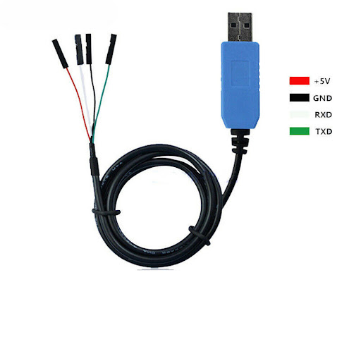
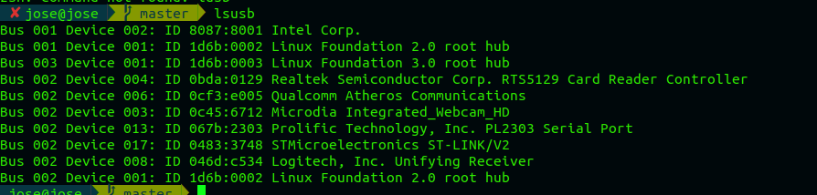

Introduction
I will show you how I installed NuttX on my STM32. The tutorial above has been done for some time and some paths have been changed. I'm going to show them and hope that some mistakes I made can help you configure and install NuttX. First of all, see some important resume after to perform some important steps (it took me two days to discover this error).
You can see the tutorial created by Alan C. Assis on youtube Youtube to remove some doubts.
What is Nuttx ?
Apache NuttX (Incubating) is a real-time operating system (RTOS) with an emphasis on standards compliance and small footprint. Scalable from 8-bit to 32-bit microcontroller environments, the primary governing standards in NuttX are POSIX and ANSI standards. Additional standard APIs from Unix and other common RTOSs (such as VxWorks) are adopted for functionality not available under these standards, or for functionality that is not appropriate for deeply-embedded environments (such as fork()).
What is a STM32 Blue Pill ?
It's a ARM 32-bits Cortex M3, running 72MHz, 64KB or 128KB flash memory and 20KB SRAM. Power supply in 3V. The STM32F103C8 is powerfull and cheap board compared to others like Arduino Uno , for example.
Table of Content
What you will need (Hardware) ?
-
STM32F103C8T6
-
ST-LINK
-
USB to TTL Serial Cable 
-
PC running Linux
How to setup this components ?
Please, make sure that connect the STM32 pin A9 to RXD USB to TTL Serial Cable and STM32 pin A10 to TX USB to TTL Serial Cable, ground to STM32 ground and +5V to STM32 5V.
After do it, connect :
- ST-LINK SWDIO to STM32 DIO
- ST-LINK SWCLK to STM32 DCLK
- ST-LINK GND to STM32 GND
At the end we'll have something like this:
Now, connect the STLINK and USB serial Cable on USB Port.
Check if it's everything ok through USB port using the command:
$ lsusb |
The output should be like the below image, with USB STLINK is connected :
Install the Openocd
Open the linux terminal and execute the following commands for install the openocd:
-
$ sudo apt-get install automake bison build-essential flex gcc-arm-none-eabi gperf git libncurses5-dev libtool libusb-dev libusb-1.0.0-dev pkg-config minicom
-
$ mkdir ~/nuttxspace
-
$ cd ~/nuttxspace
-
$ git clone http://repo.or.cz/r/openocd.git
-
$ cd ~/nuttxspace/openocd
-
$./bootstrap
-
$ ./configure --enable-internal-jimtcl --enable-maintainer-mode --disable-werror --disable-shared --enable-stlink --enable-jlink --enable-rlink --enable-vslink --enable-ti-icdi --enable-remote-bitbang
-
$ make -j4
-
$ sudo make install
-
$ cd ..
Compiling the NuttX OS
Install Kfrontends (if you do not have)
I didn't need to install kfrotends, but try to install it in case you need to install.
Now try:
-
$ sudo apt-get install kconfig-frontends
For compiling the Nuttx OS execute the commands below :
-
$ git clone https://github.com/apache/incubator-nuttx.git nuttx
-
$ git clone https://github.com/apache/incubator-nuttx-apps.git apps
Compiling
If there was no error when executing the previous commands, run :
-
$ git clone https://bitbucket.org/nuttx/tools.git
-
$ cd ~/nuttxspace/tools/kconfig-frontends
-
$ ./configure --enable-mconf
-
$ make -j4
If occours the error WARNING: 'aclocal-1.15' is missing on your system after run step 4:
Run the following command:
$ autoreconf -f -i ; make -j4
-
$ sudo make install
-
$ sudo ldconfig
-
$ cd ..
Preparing the binary:
-
$ cd ~/nuttxspace/nuttx/tools
-
$ ./configure.sh stm32f103-minimum/nsh
-
$ cd ..
-
This step you don't need edit nothing. But, we can if you want. Just select exit.

$ make menuconfig
-
$ make -j4
-
$ ls -l nuttx.bin
-
$ cd ..
Load the binary at STM32:
-
$ cd openocd/contrib/
-
$ sudo cp 60-openocd.rules /etc/udev/rules.d/
-
$ sudo udevadm trigger
-
$ cd ../..
-
$ cd nuttx
-
$ openocd -f interface/stlink-v2.cfg -f target/stm32f1x.cfg
-
Stop the execution using Ctrl + C
-
Now flash the binary:
$ openocd -f interface/stlink-v2.cfg -f target/stm32f1x.cfg -c init -c "reset halt" -c "flash write_image erase nuttx.bin 0x08000000"
-
Stop the execution using Ctrl + C
-
Checking the serial port, searching for something like ttyUSB0:
-
Set serial port on minicom:
$ sudo minicom -s
-
Save as default:
-
Press the reset button on STM32 and see NuttX shell using minicom:
$ sudo minicom
{kind=link}
{kind=link}
Frequent errors:
In case errors like:
Info : STLINK V2J29S7 (API v2) VID:PID 0483:3748
Info : Target voltage: 3.164341
Warn : UNEXPECTED idcode: 0x1ba01477
Error: expected 1 of 1: 0x2ba01477
If this error occour, you should create a new .cfg:
There's a lot of fake boards on the market and you can get one of them. The error above, it's caused by UNEXPECTED idcode: 0x1ba01477 .
-
Go to the folder and create new file based on stm32f1x.cfg. In this case I called stm32f1x_fake.cfg.
$ cat ~/nuttxspace/openocd/tcl/target/stm32f1x.cfg > ~/nuttxspace/openocd/tcl/target/stm32f1x_fake.cfg
-
Now, open the file and replace the idcode 0x2ba01477 by 0x1ba01477 . I prefer open the file using Vim editor.
$ vim ~/nuttxspace/openocd/tcl/target/stm32f1x_fake.cfg
-
$ cd ~/nuttxspace/openocd
-
$ ./bootstrap
-
$ ./configure --enable-internal-jimtcl --enable-maintainer-mode --disable-werror --disable-shared --enable-stlink --enable-jlink --enable-rlink --enable-vslink --enable-ti-icdi --enable-remote-bitbang
-
$ make -j4
-
$ sudo make install
-
$ cd ~/nuttxspace/nuttx/
-
$ openocd -f interface/stlink-v2.cfg -f target/stm32f1x_fake.cfg
-
Stop the execution using Ctrl + C
-
$ openocd -f interface/stlink-v2.cfg -f target/stm32f1x_fake.cfg -c init -c "reset halt" -c "flash write_image erase nuttx.bin 0x08000000"
Edit the file by changing the CPU_ID:
{kind=link}
Now, run the following commands again:
Now try flash the binary again:
At this point, just go to minicom and execute the needed steps.